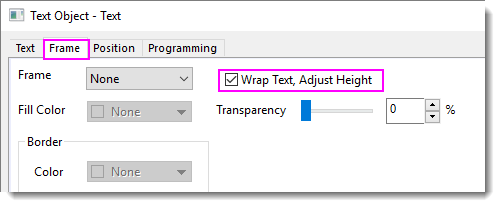

FAQ-1040 Wie breche ich Legendentext in mehrere Zeilen um?
Wrap-Legend-Text
Letztes Update: 13.12.2022
- Klicken Sie mit der rechten Maustaste auf die Legende, den Achsentitel oder das Textobjekt und wählen Sie Eigenschaften im Kontextmenü. Aktivieren Sie auf der Registerkarte Rahmen das Kontrollkästchen Textumbruch, Höhe anpassen.
- 
- Ziehen Sie an den 8 Ankern, um die Breite von Legende/Titel/Text angemessen anzupassen. Der Text wird in mehrere Zeilen umgebrochen, und die Rahmenhöhe wird automatisch angepasst.
Hinweis:
- Wenn Textumbruch, Höhe anpassen aktiviert ist, können Sie die Schriftgröße des Textes nicht durch Ziehen und Ändern des Objektrahmen anpassen. Verwenden Sie in diesem Fall bitte die Minisymbolleiste oder die Schaltflächen der Schriftgröße auf der Standardsymbolleiste.
- Außerdem können Sie Legendeneinträge nicht in mehreren Spalten anordnen, wenn das Kontrollkästchen Textumbruch, Höhe anpassen aktiviert ist.
- Der Text wird immer bei einem Leerzeichen umgebrochen. Bitte denken Sie daran, insbesondere wenn Sie diese Option in nicht englischen Systemen nutzen, die keine Leerzeichen verwenden, um Wörter zu trennen, wie Chinesisch oder Japanisch.
|
Stichwörter:Textumbruch, mehrere Zeilen, Legende, Achsentitel, Textobjekt, separate Zeile, Zeile teilen